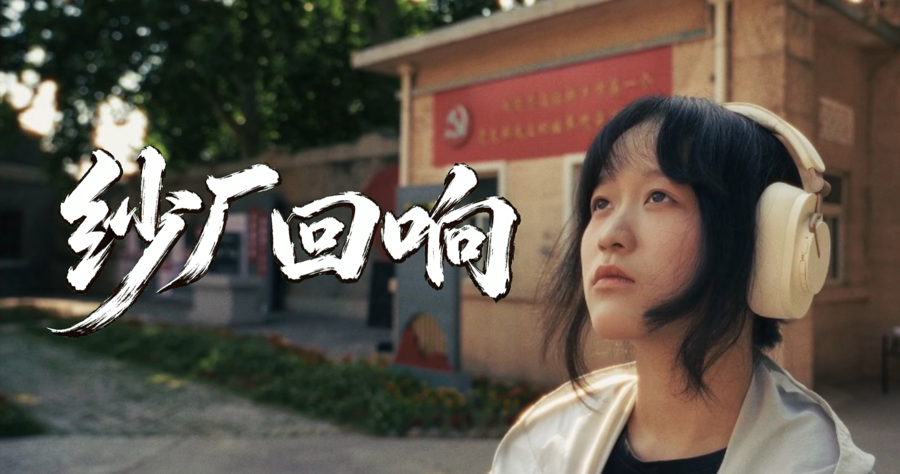
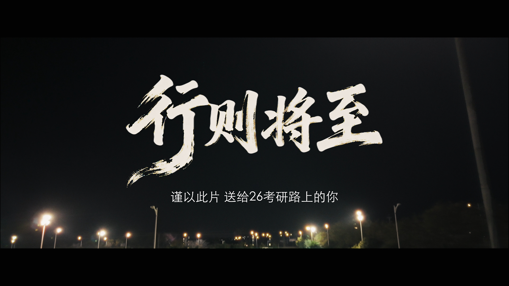
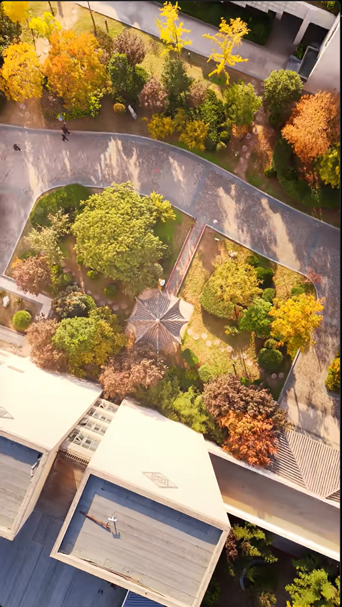
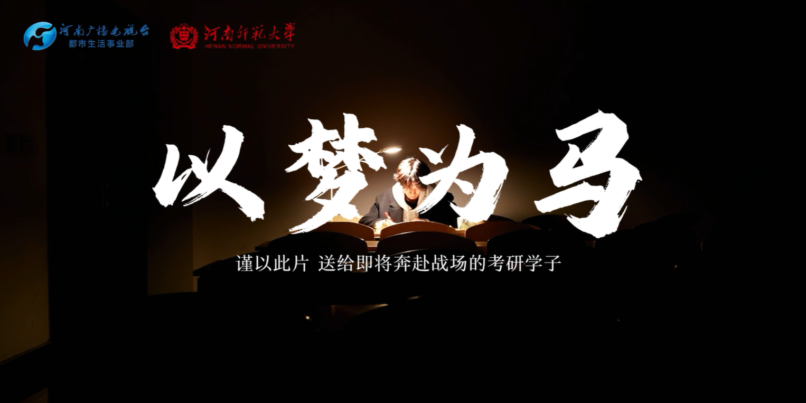

01 / 03
VISUAL CREATOR · SOFTWARE ENGINEERING
Jerry Yuan 的作品、手记，和一些正在发生的事。
SELECTED WORKS
做过的片子，以及我在其中负责的部分。




SCROLLTIMELINE
我在河南师范大学软件学院读软件工程，也一直在做影像创作。过去一段时间，我在融媒体项目里做过创意、分镜、拍摄、剪辑、调色和合成。
我喜欢把一个项目从想法推进到成片，也喜欢把过程里踩过的坑写成技术手记。现在主要关注影像表达、计算机图形学和动画方向，希望以后能把"看见画面"和"实现画面"这两件事接到一起。